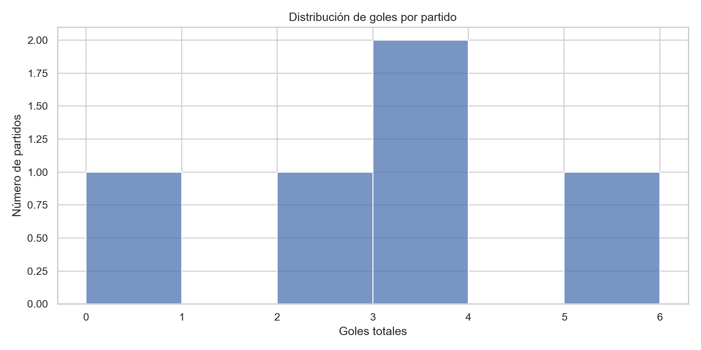
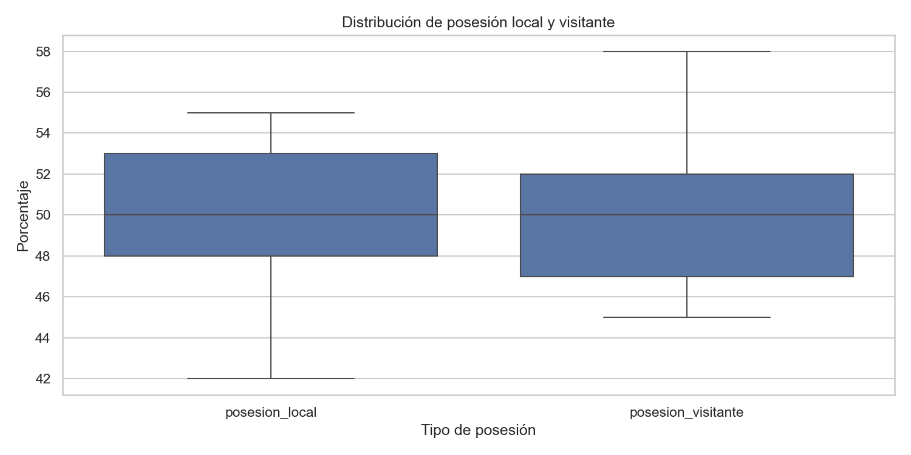
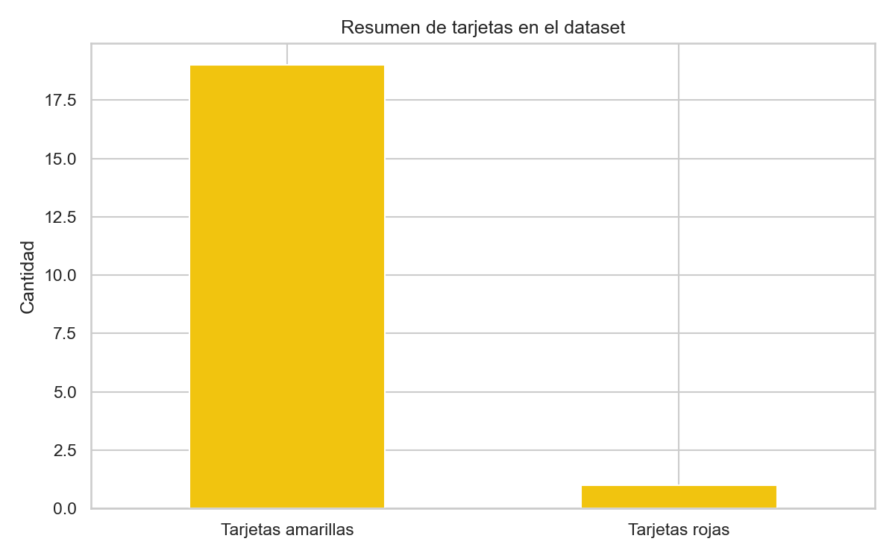

5
13
2.60
19
1
49.6%
| local_team | goles_anotados |
|---|---|
| Real Sociedad | 3.0 |
| Villarreal | 3.0 |
| Betis | 2.0 |
| Real Madrid | 2.0 |
| Barcelona | 1.0 |
| local_team | goles_concedidos |
|---|---|
| Getafe | 0.0 |
| Granada | 0.0 |
| Real Sociedad | 0.0 |
| Atletico Madrid | 1.0 |
| Real Madrid | 1.0 |
| date | local_team | visitante_team | goles_local | goles_visitante | goles_totales |
|---|---|---|---|---|---|
| 2026-03-25 | Villarreal | Betis | 3 | 2 | 5 |
| 2026-03-27 | Valencia | Real Sociedad | 0 | 3 | 3 |
| 2026-03-30 | Real Madrid | Barcelona | 2 | 1 | 3 |
| 2026-03-28 | Atletico Madrid | Sevilla | 1 | 1 | 2 |
| 2026-03-24 | Granada | Getafe | 0 | 0 | 0 |


